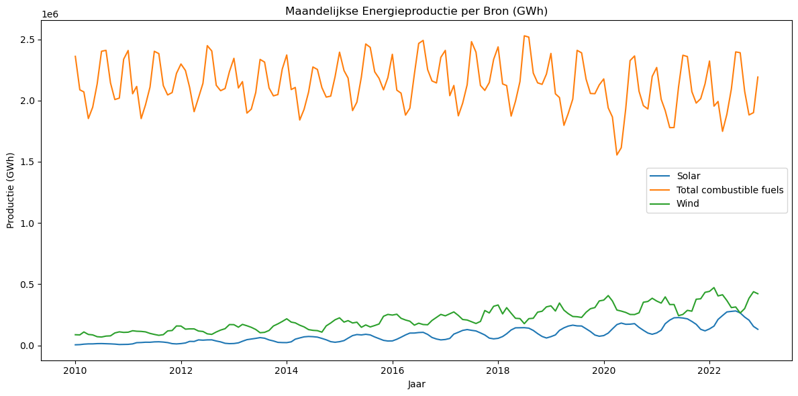
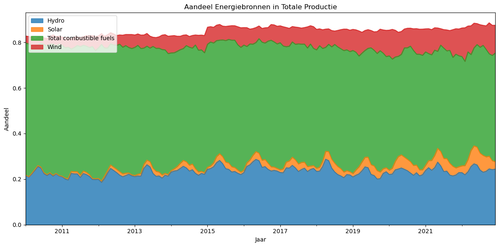
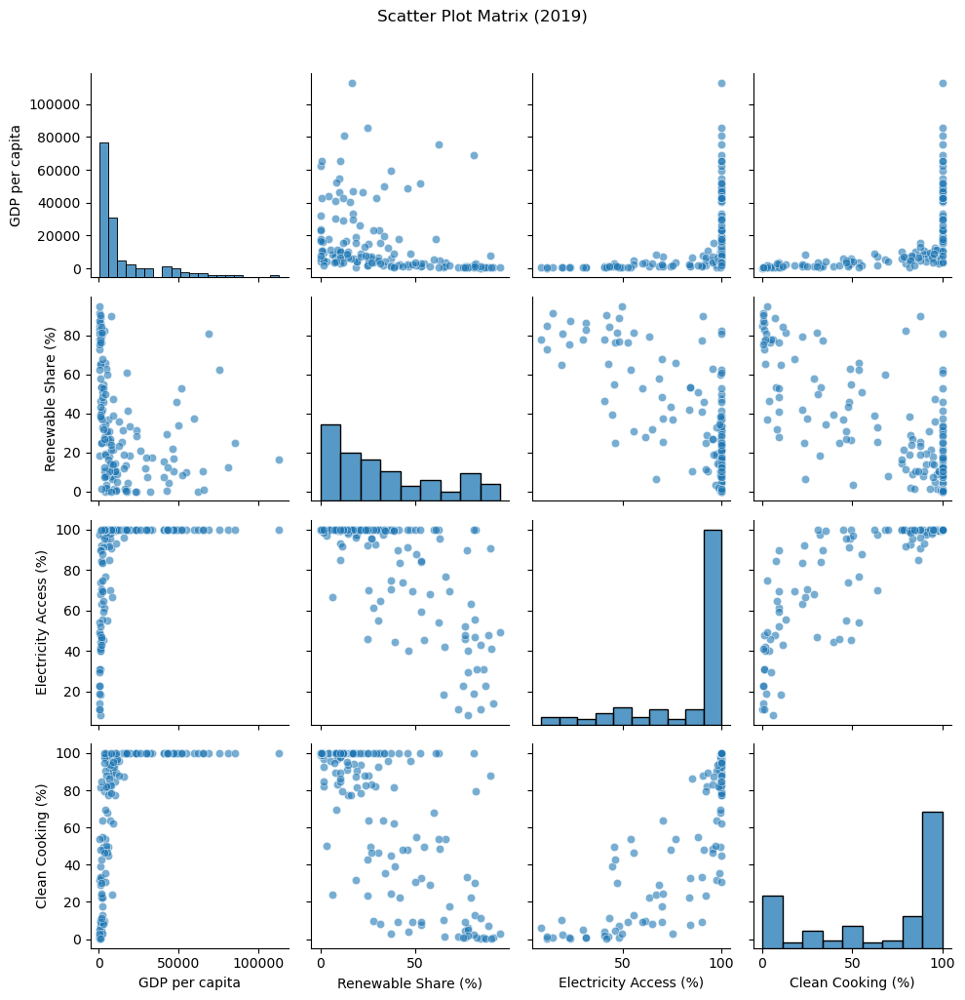
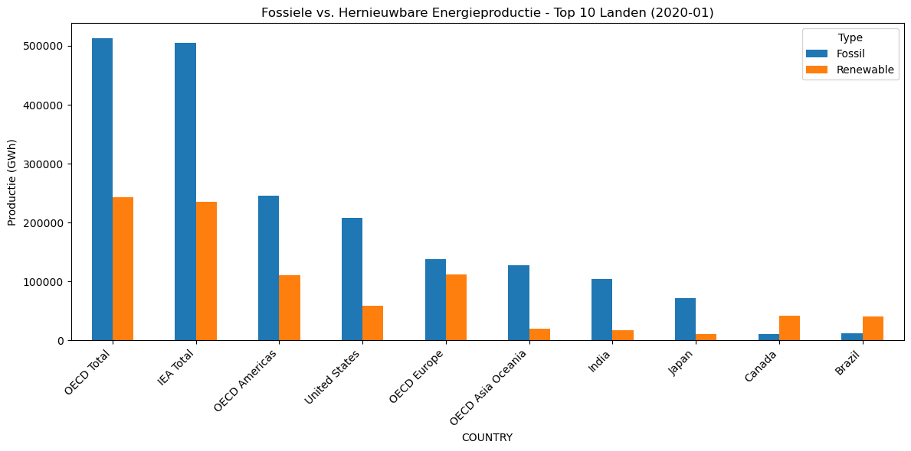
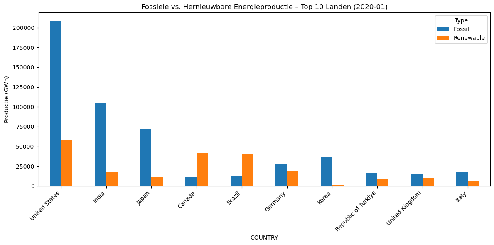
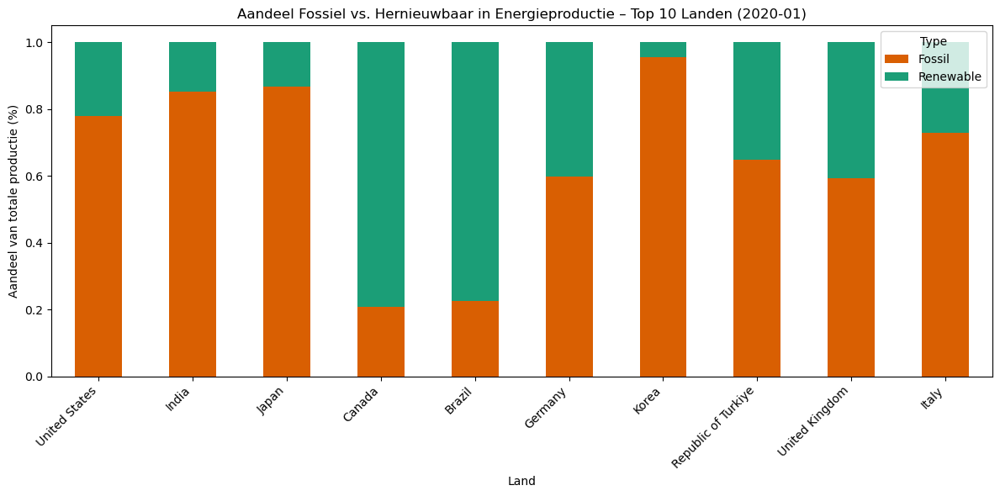

import pandas as pd
# Laad de originele datasets
monthly_df = pd.read_csv("data.csv")
global_df = pd.read_csv("global-data-on-sustainable-energy (1).csv")
---------------------------------------------------------------------------
ModuleNotFoundError Traceback (most recent call last)
Cell In[1], line 1
----> 1 import pandas as pd
3 # Laad de originele datasets
4 monthly_df = pd.read_csv("data.csv")
ModuleNotFoundError: No module named 'pandas'
import matplotlib.pyplot as plt
main_sources = ['Solar', 'Wind', 'Total combustible fuels']
df = monthly_df[monthly_df['PRODUCT'].isin(main_sources)].copy()
df['DATE'] = pd.to_datetime(df['YEAR'].astype(str) + '-' + df['MONTH'].astype(str))
pivot = df.pivot_table(index='DATE', columns='PRODUCT', values='VALUE', aggfunc='sum').dropna()
plt.figure(figsize=(12, 6))
for col in pivot.columns:
plt.plot(pivot.index, pivot[col], label=col)
plt.title("Maandelijkse Energieproductie per Bron (GWh)")
plt.xlabel("Jaar")
plt.ylabel("Productie (GWh)")
plt.legend()
plt.tight_layout()
plt.show()

stack_sources = ['Solar', 'Wind', 'Hydro', 'Total combustible fuels']
df = monthly_df[monthly_df['PRODUCT'].isin(stack_sources)].copy()
df['DATE'] = pd.to_datetime(df['YEAR'].astype(str) + '-' + df['MONTH'].astype(str))
pivot_share = df.pivot_table(index='DATE', columns='PRODUCT', values='share', aggfunc='mean').fillna(0)
pivot_share.plot.area(figsize=(12, 6), alpha=0.8)
plt.title("Aandeel Energiebronnen in Totale Productie")
plt.xlabel("Jaar")
plt.ylabel("Aandeel")
plt.legend(loc='upper left')
plt.tight_layout()
plt.show()

import pandas as pd
import plotly.express as px
# Kolomnaam instellen
col = 'Renewable energy share in the total final energy consumption (%)'
# Filter op rijen met geldige waarden
filtered = global_df[['Entity', 'Year', col]].dropna()
# Kies per land het laatste jaar met data
latest = filtered.loc[filtered.groupby('Entity')['Year'].idxmax()].copy()
latest.rename(columns={col: 'Renewable Share (%)'}, inplace=True)
# Plot met Plotly
fig = px.choropleth(
latest,
locations="Entity",
locationmode="country names",
color="Renewable Share (%)",
color_continuous_scale="YlGn",
title="Laatste Beschikbare Renewable Energy Share per Land",
hover_name="Entity",
hover_data={"Year": True}
)
fig.update_layout(
geo=dict(
showframe=False,
showcoastlines=True,
projection_type="natural earth"
),
coloraxis_colorbar=dict(
title="% Renewable",
ticks="outside"
)
)
fig.show()
df = global_df[global_df['Year'] == 2019].copy()
df = df[[
'Entity', 'gdp_per_capita',
'Renewable energy share in the total final energy consumption (%)',
'Access to electricity (% of population)',
'Access to clean fuels for cooking'
]].dropna()
fig = px.scatter(df,
x="gdp_per_capita",
y="Renewable energy share in the total final energy consumption (%)",
size="Access to electricity (% of population)",
color="Access to clean fuels for cooking",
hover_name="Entity",
size_max=50,
title="GDP vs. Renewable Share (2020)",
labels={"gdp_per_capita": "GDP per capita",
"Renewable energy share in the total final energy consumption (%)": "Renewable Share (%)"}
)
fig.show()
import seaborn as sns
import matplotlib.pyplot as plt
# Kies een recent jaar met voldoende data
year = 2019
cols = [
'gdp_per_capita',
'Renewable energy share in the total final energy consumption (%)',
'Access to electricity (% of population)',
'Access to clean fuels for cooking'
]
df = global_df[global_df['Year'] == year][cols].dropna()
# Herbenoemen voor duidelijke labels
df.columns = ['GDP per capita', 'Renewable Share (%)', 'Electricity Access (%)', 'Clean Cooking (%)']
sns.pairplot(df, diag_kind='hist', plot_kws={'alpha':0.6})
plt.suptitle(f"Scatter Plot Matrix ({year})", y=1.02)
plt.tight_layout()
plt.show()
c:\Users\jorda\anaconda3\Lib\site-packages\seaborn\axisgrid.py:118: UserWarning:
The figure layout has changed to tight
C:\Users\jorda\AppData\Local\Temp\ipykernel_54832\2971341400.py:20: UserWarning:
The figure layout has changed to tight

# Kies één maand/jaar
year = 2020
month = 1
df = monthly_df[(monthly_df['YEAR'] == year) & (monthly_df['MONTH'] == month)].copy()
# Alleen relevante bronnen
df = df[df['PRODUCT'].isin(['Total combustible fuels', 'Solar', 'Wind', 'Hydro'])]
# Categoriseer als 'Fossil' of 'Renewable'
def label_type(product):
return 'Fossil' if product == 'Total combustible fuels' else 'Renewable'
df['Type'] = df['PRODUCT'].apply(label_type)
# Groepeer productie per land per type
agg = df.groupby(['COUNTRY', 'Type'])['VALUE'].sum().unstack().fillna(0)
# Top 10 landen met hoogste totale productie
top_countries = agg.sum(axis=1).sort_values(ascending=False).head(10)
top_agg = agg.loc[top_countries.index]
# Plot
top_agg.plot(kind='bar', figsize=(12, 6), stacked=False)
plt.title(f"Fossiele vs. Hernieuwbare Energieproductie - Top 10 Landen ({year}-{month:02})")
plt.ylabel("Productie (GWh)")
plt.xticks(rotation=45, ha='right')
plt.tight_layout()
plt.show()

import pandas as pd
import matplotlib.pyplot as plt
# Dataset inladen
monthly_df = pd.read_csv("data.csv")
# ❌ Lijst met niet-landen uitsluiten
exclude_entities = [
'World', 'Africa', 'Asia', 'Europe', 'North America', 'South America',
'European Union (27)', 'European Union (28)', 'OECD', 'Non-OECD',
'Non-OECD Asia', 'Non-OECD Europe and Eurasia', 'Middle East', 'Eurasia',
'Other Asia Pacific', 'Central & South America', 'IEA Net Zero by 2050 scenario',
'IEA Total', 'IEA Europe', 'IEA Americas', 'IEA Asia Oceania',
'OECD Total', 'OECD Americas', 'OECD Europe', 'OECD Asia Oceania'
]
# 📅 Filter op jaar + maand
year = 2020
month = 1
df = monthly_df[(monthly_df['YEAR'] == year) & (monthly_df['MONTH'] == month)].copy()
# 🔌 Alleen gewenste producten
df = df[df['PRODUCT'].isin(['Total combustible fuels', 'Solar', 'Wind', 'Hydro'])]
# 🧹 Verwijder niet-landen
df = df[~df['COUNTRY'].isin(exclude_entities)]
# 🌱 Label 'Fossil' of 'Renewable'
df['Type'] = df['PRODUCT'].apply(lambda x: 'Fossil' if x == 'Total combustible fuels' else 'Renewable')
# 📊 Groepeer per land/type
agg = df.groupby(['COUNTRY', 'Type'])['VALUE'].sum().unstack().fillna(0)
# 🔝 Top 10 landen met hoogste totale productie
top_countries = agg.sum(axis=1).sort_values(ascending=False).head(10)
top_agg = agg.loc[top_countries.index]
# 📈 Plot de bar chart
top_agg.plot(kind='bar', figsize=(12, 6), stacked=False)
plt.title(f"Fossiele vs. Hernieuwbare Energieproductie – Top 10 Landen ({year}-{month:02})")
plt.ylabel("Productie (GWh)")
plt.xticks(rotation=45, ha='right')
plt.tight_layout()
plt.show()

import pandas as pd
import matplotlib.pyplot as plt
# Dataset laden
monthly_df = pd.read_csv("data.csv")
# Aggregaten uitsluiten
exclude_entities = [
'World', 'Africa', 'Asia', 'Europe', 'North America', 'South America',
'European Union (27)', 'European Union (28)', 'OECD', 'Non-OECD',
'Non-OECD Asia', 'Non-OECD Europe and Eurasia', 'Middle East', 'Eurasia',
'Other Asia Pacific', 'Central & South America', 'IEA Net Zero by 2050 scenario',
'IEA Total', 'IEA Europe', 'IEA Americas', 'IEA Asia Oceania',
'OECD Total', 'OECD Americas', 'OECD Europe', 'OECD Asia Oceania'
]
# Filter op maand en jaar
year = 2020
month = 1
df = monthly_df[(monthly_df['YEAR'] == year) & (monthly_df['MONTH'] == month)].copy()
# Alleen gewenste energiebronnen
df = df[df['PRODUCT'].isin(['Total combustible fuels', 'Solar', 'Wind', 'Hydro'])]
# Alleen echte landen
df = df[~df['COUNTRY'].isin(exclude_entities)]
# Label 'Fossil' of 'Renewable'
df['Type'] = df['PRODUCT'].apply(lambda x: 'Fossil' if x == 'Total combustible fuels' else 'Renewable')
# Groepeer per land en type
agg = df.groupby(['COUNTRY', 'Type'])['VALUE'].sum().unstack().fillna(0)
# Kies top 10 landen met hoogste totale productie
top_countries = agg.sum(axis=1).sort_values(ascending=False).head(10)
top_agg = agg.loc[top_countries.index]
# Omzetten naar percentage
top_agg_percent = top_agg.div(top_agg.sum(axis=1), axis=0)
# Plot
top_agg_percent.plot(kind='bar', stacked=True, figsize=(12, 6), color=['#d95f02', '#1b9e77'])
plt.title(f"Aandeel Fossiel vs. Hernieuwbaar in Energieproductie – Top 10 Landen ({year}-{month:02})")
plt.ylabel("Aandeel van totale productie (%)")
plt.xlabel("Land")
plt.xticks(rotation=45, ha='right')
plt.legend(title="Type")
plt.tight_layout()
plt.show()

import pandas as pd
import plotly.express as px
import plotly.graph_objects as go
from sklearn.linear_model import LinearRegression
import numpy as np
# === 1. Data inladen
df = pd.read_csv("global-data-on-sustainable-energy (1).csv") # pas naam aan indien nodig
# === 2. Aggregaten verwijderen
exclude_entities = [
'World', 'Africa', 'Asia', 'Europe', 'North America', 'South America',
'European Union (27)', 'European Union (28)', 'OECD', 'Non-OECD',
'Non-OECD Asia', 'Non-OECD Europe and Eurasia', 'Middle East', 'Eurasia',
'Other Asia Pacific', 'Central & South America', 'IEA Net Zero by 2050 scenario',
'IEA Total', 'IEA Europe', 'IEA Americas', 'IEA Asia Oceania',
'OECD Total', 'OECD Americas', 'OECD Europe', 'OECD Asia Oceania'
]
df = df[~df['Entity'].isin(exclude_entities)]
# === 3. Relevante kolommen
x_col = 'gdp_per_capita'
y_col = 'Renewable energy share in the total final energy consumption (%)'
size_col = 'Access to electricity (% of population)'
# Alleen landen met complete gegevens
df = df[['Entity', 'Year', x_col, y_col, size_col]].dropna()
# === 4. Laatste beschikbare jaar per land
latest_df = df.loc[df.groupby('Entity')['Year'].idxmax()].copy()
# === 5. Selecteer top 10 & bottom 10 op renewable share
sorted_df = latest_df.sort_values(by=y_col)
subset_df = pd.concat([sorted_df.head(10), sorted_df.tail(10)])
# === 6. Medianen berekenen
x_median = latest_df[x_col].median()
y_median = latest_df[y_col].median()
# === 7. Trendlijn
X = subset_df[[x_col]].values
Y = subset_df[[y_col]].values
model = LinearRegression()
model.fit(X, Y)
trend_x = np.linspace(X.min(), X.max(), 100)
trend_y = model.predict(trend_x.reshape(-1, 1))
# === 8. Bubble scatterplot
fig = px.scatter(
subset_df,
x=x_col,
y=y_col,
size=size_col,
hover_name="Entity",
size_max=40,
opacity=0.8,
height=600,
width=1400,
color=y_col,
color_continuous_scale="Viridis",
labels={
x_col: "GDP per Capita",
y_col: "Renewable Energy Share (%)",
size_col: "Electricity Access (%)"
},
title="Top & Bottom 10: Sustainability vs GDP per Capita – Kwadrantanalyse"
)
# === 9. Trendlijn toevoegen
fig.add_trace(go.Scatter(
x=trend_x.flatten(),
y=trend_y.flatten(),
mode='lines',
name='Trendline',
line=dict(color='white', dash='dash')
))
# === 10. Kwadrantlijnen
fig.add_shape(type="line",
x0=x_median, y0=subset_df[y_col].min(),
x1=x_median, y1=subset_df[y_col].max(),
line=dict(color="lightgray", width=1, dash="dot")
)
fig.add_shape(type="line",
x0=subset_df[x_col].min(), y0=y_median,
x1=subset_df[x_col].max(), y1=y_median,
line=dict(color="lightgray", width=1, dash="dot")
)
# === 11. Symmetrische assen
x_range = max(x_median - subset_df[x_col].min(), subset_df[x_col].max() - x_median)
y_range = max(y_median - subset_df[y_col].min(), subset_df[y_col].max() - y_median)
fig.update_layout(
xaxis=dict(range=[x_median - x_range, x_median + x_range]),
yaxis=dict(range=[y_median - y_range, y_median + y_range])
)
# === 12. Kwadrantlabels
quadrant_labels = [
("💰🌪 High GDP, Low Renewable", x_median + x_range * 0.6, y_median - y_range * 0.6),
("🌱💰 High GDP, High Renewable", x_median + x_range * 0.6, y_median + y_range * 0.6),
("⚠️ Low GDP, Low Renewable", x_median - x_range * 0.6, y_median - y_range * 0.6),
("🌍💡 Low GDP, High Renewable", x_median - x_range * 0.6, y_median + y_range * 0.6)
]
for text, x, y in quadrant_labels:
fig.add_annotation(
text=text,
x=x,
y=y,
showarrow=False,
font=dict(size=12),
bgcolor="rgba(255,255,255,0.7)",
bordercolor="gray",
borderwidth=1
)
# === 13. Toelichting onderaan (zoals voorbeeld)
fig.add_annotation(
text="Deze grafiek toont het contrast tussen de 10 landen met de hoogste en laagste hernieuwbare energiedeling.<br>"
"De lijnen markeren het mediane GDP per capita en het mediane aandeel hernieuwbare energie.<br>"
"De trendlijn toont dat hogere GDP niet automatisch leidt tot meer duurzaamheid.",
align='left',
showarrow=False,
xref='paper', yref='paper',
x=0, y=-0.35,
bordercolor="lightgray",
borderwidth=1,
bgcolor="rgba(255,255,255,0.9)",
font=dict(size=12),
)
# === 14. Layout afronden
fig.update_layout(template='simple_white', margin=dict(l=50, r=50, t=80, b=120))
# === 15. Tonen
fig.show()